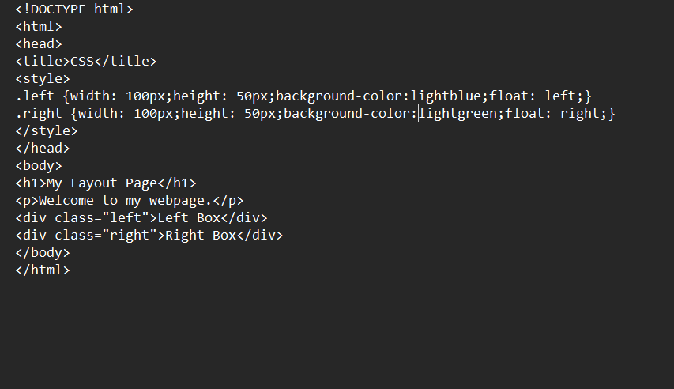
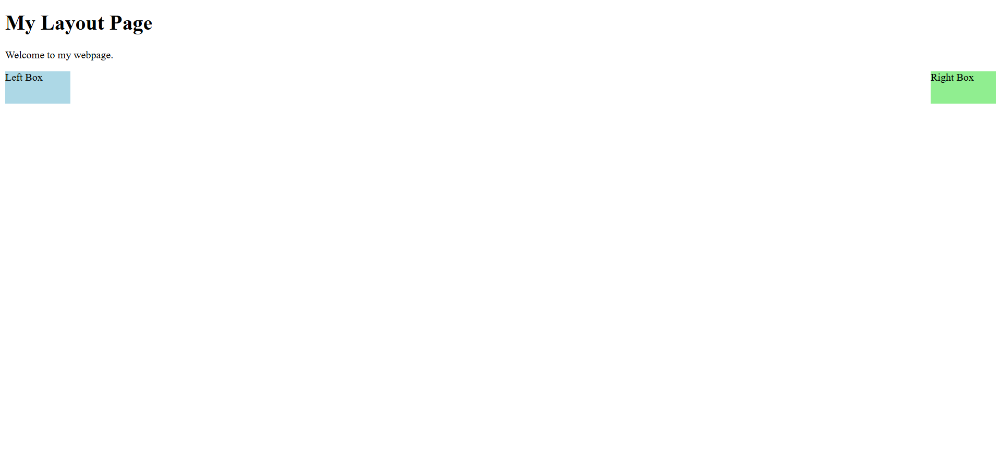

Browser Output and Reflection on Lesson 3
Reflection: In this lesson, I learned how CSS can be used to organize the layout of a webpage. I learned about the box model, which shows that every element on a page is placed inside a box with margins, borders, padding, and content. I also learned how properties like position, offset, and float help control where elements appear on a page. This lesson helped me understand how CSS can make webpages more organized and easier to design.
Here is my browser output for this lesson!

